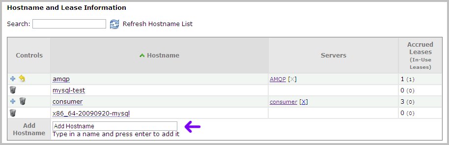
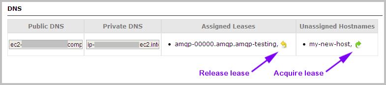

Managing Hostnames
| PERMISSIONS REQUIRED |
| To set up the publishers required for Nimbul’s hostname features, you must have administrator access to the relevant provider account. You must also have administrator access in order to assign hostnames at the provider account level in addition to the server level. Cluster administrators can perform all other hostname tasks. |
Nimbul can create /etc/hosts files for your instances. To use hostnames within Nimbul, you must first set up the necessary publishers, then add and assign hostnames as you manage instances.
Topics covered on this page:
Set Up Publishers
Add, Assign and Manage Hostnames
Set Up Publishers
To set up publishers for host files, complete these steps:
- Configure an LDNS account publisher. This publisher creates host files for the account overall and for each cluster within the account.
- (Optional) Configure a Nagios publisher if you use Nagios.
These publishers can then be run to view the resulting /etc/hosts files and set the HOSTS_FILE_URL variable for the account.
Add, Assign and Manage Hostnames
Adding a Hostname
Hostnames can be added at the provider account level or the server level.
To add a hostname to a provider account, complete these steps:
- In the main Nimbul menu, click Provider Accounts.
- On the provider account details page, click the DNS tab.
- At the bottom of the DNS tab, review the list of hostnames. To add a new hostname, type its name in the box at the bottom of the list. Press Enter. (You will then have to assign the hostname at the server level.)

To add a hostname to a server, complete these steps:
- Click a server name wherever you find it in the system (e.g., on a dashboard or on the Servers tab for the cluster, or within the hostnames list on a provider account DNS tab). The server details page appears.
- Click the DNS tab.
- In the box at the bottom of the hostname list, type the hostname, then press Enter.
Note: A hostname can be added to only one server at a time.
Once a hostname has been added to a server, instances can acquire leases on it, as described in the next section.
Managing Hostnames
As you launch instances under a server, hostname leases will be automatically acquired. You can also manually acquire leases (for example, when a hostname is added to the server after instances have already been launched) on the instance details page. Click the green arrow icon to acquire a lease.

You can also release leases on instance details pages (click a yellow arrow icon; see the preceding image).
Use the following options to further manage hostnames as you use Nimbul:
- When you launch instances, you have the option to stop automatic hostname lease acquisition. Simply select Skip DNS when you launch the instance.
- For running instances, you can turn hostnames “on” or “off” with the DNS Active? checkbox on the instance details page.
- In the clusters area, you can view all hostname leases (accrued and in-use) for that cluster.
Related Topics
Next: Managing Addresses »